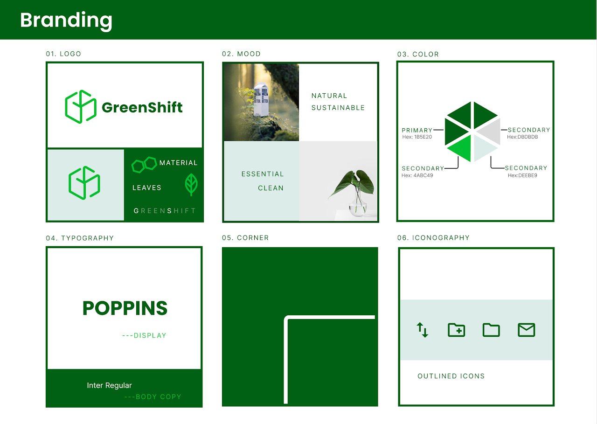
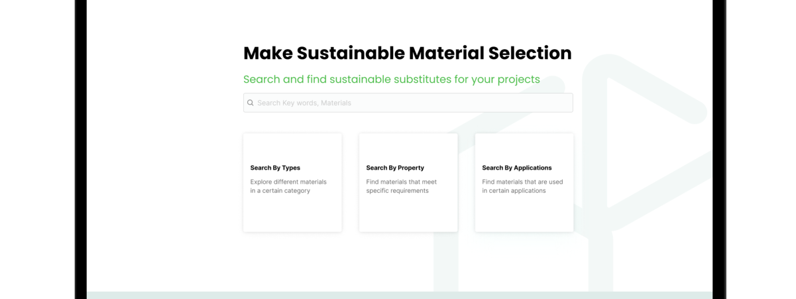
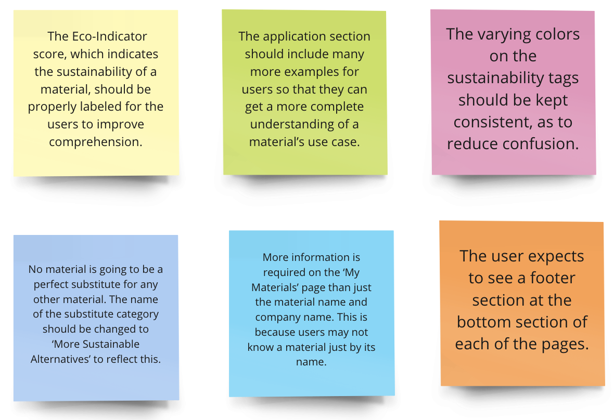

📅 Year: 2021 Fall
⚡️ Contributions: User Research, Wireframes, Prototyping, Usability Testing
💻 Software: Figma, Miro
Design a product that makes the world a more sustainable place? What's a better way to reduce environmental pollution than making consumer products greener? 🌱
01 | Here and Now, Sustainability!
Not to anyone's surprise, research has shown that consumers are more likely to buy products that are environmentally friendly. People's environmental awareness has influenced many business decisions.
02 | So How? - Ideation
Yes, I know, sustainability is such a broad topic. Our team brainstormed a lot of products that centered around how consumers can purchase more environment-friendly products or recycle materials more efficiently.
Then we looked harder at the root of consumer waste and recognized that it's the industrial designers who can decide the total carbon footprint of a product. The best way to benefit the environment is to help industrial designers use more sustainable materials from the start.
03 | Know Your Users 👩🏻💻
So - industrial design students. Who are they? What user characteristics do they have?
"People with highly explorative nature, who are heavy visual learners and with limited financial resources."
04 | Existing products
How do industrial designers choose materials? What properties do they consider?
We found five existing products that industrial designers use to choose materials.
👍 Useful - allowing users to import datasets to make the app extensible; displaying example products to inspire designers.
👎 Problem - low usability, lack of comparison between materials, no substitutes recommendations.
05 | Find Out What They Want - User Research & Insights
Research Methods
🧐 Key findings from the affinity map
💡 Design Implications for Future Product
06 | Visual Design 🎨
07 | User Flow 🤓
1. Finding materials
2. Adding materials to "My Materials" Library
3. Viewing sustainable substitutes for materials
4. Compare properties of one or more materials
08 | Interactive Prototype
09 | Design Evaluation
Moderated Usability Testing
We recruited 4 industrial design students to do a think-aloud task walkthrough with us. Here are the key points.
Heuristic Evaluation
Participants:
4 HCI experts (HCI professors at Georgia Tech) gave us feedback on the overall product design.
🚫 Issues identified:
10 | Takeaways
In this project, I learned how to do user research in a field outside of my comfort zone - industrial design. In hindsight, this unfamiliarity makes me completely open to users' data and feedback and flexible in my design. Teammates' perspectives also become rocks that I can bounce ideas. I enjoyed being open to every design possibility through each iteration process! 🔁